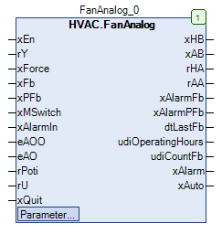

FanAnalog (FB)¶
FUNCTION_BLOCK FanAnalog
Kurzbeschreibung¶
Steuerung eines drehzahlvariablen VentilatorsZusatzfunktionen: Handübersteuerungen, Reparaturschalter, Betriebsstundenzähler, LuftmangelTypische Anwendung: Ansteuerung eines Ventilators mit Frequenzumrichter
Darstellung¶

Schnittstellen¶
Eingänge¶
Name Datentyp Wertebereich Initialwert Funktion xEn BOOL Anforderung des Ventilators ( FALSE = Aus, TRUE = Ein ) rY REAL Stellsignal - Drehzahl 0.0 - 100.0 % xForce BOOL FALSE Zwangssperrung des Ventilators nach Handübersteuerung ( FALSE = Aus, TRUE = Ein ) xFb BOOL Betriebsmeldung des Ventilators ( FALSE = Aus, TRUE = Ein ) xPFb BOOL Rückmeldung der Luftmangelüberwachung ( FALSE = Luftmangel, TRUE = kein Luftmangel ) xMSwitch BOOL TRUE Rückmeldung der Reparaturschalters ( FALSE = Schalter Aus, TRUE = Schalter Ein ) xAlarmIn BOOL Störmeldung des Ventilators ( FALSE = Aus, TRUE = Ein ) eAOO HVACTYPES.eManBin HVACTYPES.eManBin.Auto, HVACTYPES.eManBin.ManOff, HVACTYPES.eManBin.ManOn HVACTYPES.eManBin.Auto Betriebsart der Handübersteuerung - Hardware für die Freigabe eAO HVACTYPES.eManNum HVACTYPES.eManNum.Auto, HVACTYPES.eManNum.Man HVACTYPES.eManNum.Auto Betriebsart der Handübersteuerung - Hardware für das Stellsignal rPoti REAL Handwert - Handübersteuerung - Hardware für das Stellsignal rU REAL Rückführsignal vom Ventilator in % xQuit BOOL FALSE Rücksetzung der Störmeldungen ( Überwachungen ) ( FALSE = Aus, TRUE = Ein )
Ausgänge¶
Name Datentyp Wertebereich Initialwert Funktion xHB BOOL Freigabe - Ventilator nach Handübersteuerung ( FALSE = Aus, TRUE = Ein ) xAB BOOL Freigabe - Ventilator vor Handübersteuerung ( FALSE = Aus, TRUE = Ein ) rHA REAL Stellsignal - Ventilator nach Handübersteuerung in % rAA REAL Stellsignal - Ventilator vor Handübersteuerung in % xAlarmFb BOOL Störmeldung der Betriebsüberwachung ( FALSE = Aus, TRUE = Ein ) xAlarmPFb BOOL Störmeldung der Luftmangelüberwachung ( FALSE = Aus, TRUE = Ein ) dtLastFb DATE_AND_TIME Datum / Uhrzeit des letzten Betriebs des Ventilators udiOperatingHours UDINT Betriebsstunden des Ventilators udiCountFb UDINT Anzahl der Einschaltungen des Ventilators xAlarm BOOL Sammelstörmeldung ( FALSE = Aus, TRUE = Ein ) xAuto BOOL Sammelmeldung - Automatikbetrieb ( FALSE = kein Automatikbetrieb, TRUE = Automatikbetrieb )
Sollwerte / Parameter¶
Name Datentyp Wertebereich Initialwert Funktion udiPFbControlTime UDINT 0 ... 3600s 60s Meldeverzögerung der Luftmangelüberwachung in s xPFbControl BOOL TRUE Freigabe / Sperrung der Luftmangelüberwachung ( FALSE = Sperrung, TRUE = Freigabe ) xAlarmControl BOOL TRUE Einfluss von xAlarm auf xAB ( FALSE = kein Einfluss, TRUE = Sperrung ) udiFbControlTime UDINT 0 ... 300s 60s Meldeverzögerung der Betriebsüberwachung in s xFbControl BOOL TRUE Freigabe / Sperrung der Betriebsüberwachung ( FALSE = Sperrung, TRUE = Freigabe ) eManValue REAL Stellsignal im Handbetrieb in % eManModeN eManNum eManNum.Auto, eManNum.man eManNum.Auto Betriebsart der Handübersteuerung für das Stellsignal rHA eManModeB eMANBIN eMANBIN.Auto, eMANBIN.ManOff, eMANBIN.ManOn eMANBIN.Auto Betriebsart der Handübersteuerung für den digitalen Ausgang xHB
Funktionsbeschreibung¶
Allgemeines¶
Dieser Funktionsbaustein steuert einen drehzahlvariablen Ventilator mittels eines stetigen Stellsignals rHA, der
im Automatikbetrieb ( eManModeN = eManNum.Auto ) unverändert vom Eingang rY übernommen wird.
Die generelle Freigabe des Ventilators erfolgt über die Anforderung xEn und das Freigabesignal xHB.
Es kommen im Wesentlichen folgende Funktionsbausteine zur Anwendung:
Freigabe - Ventilator vor Handübersteuerung xAB¶
Die Freigabe - Ventilator vor Handübersteuerung xAB wird aktiviert ( = TRUE ), falls gleichzeitig folgende Bedingungen erfüllt sind:
Fall 1:
xEn = TRUE
xMSwitch = TRUE
xAlarmControl = FALSE
Fall 2:
xEn = TRUE
xMSwitch = TRUE
xAlarmControl = TRUE
xAlarm = FALSE
In allen übrigen Situationen ist die Freigabe - Ventilator vor Handübersteuerung xAB nicht aktiviert ( = FALSE ).
Freigabe - Ventilator nach Handübersteuerung xHB¶
Die Freigabe - Ventilator nach Handübersteuerung xHB entspricht der Freigabe - Ventilator vor Handübersteuerung xAB,
zusätzlich erweitert um ein Handübersteuermodul.
Die Freigabe kann generell nur dann erfolgen, falls die Zwangssperrung des Ventilators nach Handübersteuerung nicht aktiv ( xForce = FALSE )
und die Sammelstörmeldung nicht aktiv sind ( xAlarm = FALSE ).
xAB eManModeB xHB Hinweise FALSE eMANBIN.Auto FALSE Handübersteuermodul in Automatik TRUE eMANBIN.Auto TRUE Handübersteuermodul in Automatik X eMANBIN.ManOn TRUE Handübersteuermodul in Handbetrieb Ein X eMANBIN.ManOff FALSE Handübersteuermodul in Handbetrieb Aus
Legende: X = beliebig
Meldung des Reparaturschalters xMSwitch¶
xMSwitch = TRUE: Reparaturschalter wurde nicht ausgelöst ( Normalzustand )
xMSwitch = FALSE: Reparaturschalter wurde ausgelöst ( Fehlerzustand )
Zwangssperrung des Ventilators nach Handübersteuerung xForce¶
xForce = FALSE: keine Zwangssperrung ( Normalzustand )
xForce = TRUE: Zwangssperrung ( Ausnahmezustand )
Betriebsstunden und Einschaltvorgänge¶
Die Anzahl der Betriebsstunden und der Einschaltvorgänge werden erfasst ( = Zählprozess aktiv ), falls die Betriebsmeldung
des Ventilators xFb aktiv ist und gleichzeitig die Sammelstörmeldung xAlarm nicht aktiv ist ( = FALSE ).
Die Ergebnisse stehen an den Zählerausgängen udiOperatingHours und udiCountFb zur Verfügung.
Schreibzugriff auf die Zählerstände
Über den Pfad ‘Instanzname._OperatingHours.udiOperatingHours’ bzw. ‘Instanzname._OperatingHours.udiCountFb’ ist ein Schreibzugriff auf die beide Zählerstände möglich.
Voraussetzung für den Einsatz des Funktionsbausteins FanAnalog
Zur korrekten Funktion ist der Einsatz des Funktionsbausteins TimeRead mit xEn = TRUE erforderlich.
Datum / Uhrzeit des letzten Betriebs des Ventilators dtLastFb¶
Am Ausgang dtLastFb steht während des Zählprozesses das aktuelle Datum / die aktuelle Uhrzeit zur Verfügung.
Am Ausgang dtLastFb steht ausserhalb des Zählprozesses das Datum / die Uhrzeit am Ende des letzten Zählprozesses zur Verfügung.
Am Ausgang dtLastFb wird vor dem ersten Zählprozess der Initialisierungswert DT#1970-1-1-0.0.0 ausgegeben.
Betriebsüberwachung¶
Die Betriebsüberwachung kann durch den Sollwert / Parameter xFbControl freigegeben ( = TRUE ) oder gesperrt ( = FALSE ) werden.
Bei gesperrter Überwachung wird die Störmeldung der Betriebsüberwachung xAlarmFb immer gesperrt ( = FALSE ).
Bei freigegebener Überwachung wird die Störmeldung der Betriebsüberwachung xAlarmFb aktiviert ( = TRUE ), falls
gleichzeitig während einer Mindestzeitdauer udiFbControlTime folgende Zustände gegeben sind:
xHB und xFb = ungleich ( Freigabezustand und Betriebszustand stimmen nicht überein )
eAOO = HVACTYPES.eManBin.Auto ( Handübersteuerung - Hardware für die Freigabe in Automatik )
xFbControl = TRUE ( Betriebsüberwachung ist freigegeben )
Die Störmeldung der Betriebsüberwachung xAlarmFb wird zurück gesetzt ( = FALSE ), falls mindestens eine der nachfolgenden
Bedingungen erfüllt ist:
eAOO = HVACTYPES.eManBin.Auto ( Rückschaltung in den Automatikbetrieb der Handübersteuerung - Hardware )
xQuit = TRUE ( Rücksetzung der Überwachungen ist aktiv )
xFbControl = FALSE ( Betriebsüberwachung gesperrt )
Luftmangelüberwachung¶
Die Luftmangelüberwachung erfolgt durch die Auswertung der Zustände an den Eingängen xPFb bzw. xFb.
Die Störmeldung der Luftmangelüberwachung xAlarmPFb wird aktiviert ( = TRUE ), falls bei freigegebener Überwachung ( xPFbControl = TRUE )
während der Meldeverzögerung der Luftmangelüberwachung udiPFbControlTime permanent der Eingang xPFb nicht aktiv ( = FALSE ) und der
Eingang xFb aktiv ( = TRUE ) sind.
Die Störmeldung der Luftmangelüberwachung xAlarmPFb wird deaktiviert ( = FALSE ), falls die Bedingungen zur Aktivierung nicht mehr gegeben sind
und gleichzeitig die Überwachung gesperrt ist ( xPFbControl = FALSE ) und / oder die Rücksetzung der Störmeldungen ( Überwachungen ) aktiv ist ( xQuit = TRUE ).
Sammelstörmeldung xAlarm¶
Die Sammelstörmeldung wird aktiviert ( = TRUE ), falls mindestens eine der nachfolgend beschriebenen Bedingungen erfüllt ist.
xAlarmIn = TRUE ( Störmeldung des Ventilators ist aktiv )
xAlarmFB = TRUE ( Fehler aus der Betriebüberwachung )
xAlarmPFB = TRUE ( Fehler aus der Luftmangelüberwachung )
xMSwitch = FALSE ( Reparaturschalter in Stellung Aus )
In allen übrigen Fällen ist die Sammelstörung nicht aktiv ( = FALSE ).
Stellsignal Ventilator vor Handübersteuerung rAA¶
Das Stellsignal des Ventilators vor Handübersteuerung rAA wird unverändert vom Eingang Stellsignal - Drehzahl rY übernommen, falls
entweder der Ausgang xHB und / oder der Eingang xFb aktiv sind.
In allen übrigen Situationen wird das Stellsignal rAA auf den Wert 0.0 % fixiert.
Stellsignal Ventilator nach Handübersteuerung rHA¶
Das Stellsignal des Klappenantriebs nach Handübersteuerung rHA entspricht dem Stellsignal des Ventilators vor Handübersteuerung rAA
zusätzlich erweitert um ein Handübersteuermodul.
rAA eManModeN rHA Hinweise X eMANNUM.Auto rAA Handübersteuermodul in Automatik X eMANNUM.Man eManValue Handübersteuermodul in Handbetrieb
Legende: X = beliebig
Sammelmeldung Automatikbetrieb xAuto¶
Die Sammelmeldung Automatikbetrieb xAuto wird aktiviert ( = TRUE ), falls folgende Bedingungen gleichzeitig erfüllt sind:
- Eingang eAOO = HVACTYPES.eManBin.Auto
- Eingang eAO = HVACTYPES.eManNum.Auto
- Sollwert / Parameter eManModeB = eMANBIN.Auto
- Sollwert / Parameter eManModeN = eMANNUM.Auto
Visualisierung¶
Codesys¶
- InOut:
Scope Name Type Initial Comment Input xEn BOOL Anforderung des Ventilators ( FALSE = Aus, TRUE = Ein ) rY REAL Stellsignal - Drehzahl 0.0 - 100.0 % xForce BOOL FALSE Zwangssperrung des Ventilators nach Handübersteuerung ( FALSE = Aus, TRUE = Ein ) xFb BOOL Betriebsmeldung des Ventilators ( FALSE = Aus, TRUE = Ein ) xPFb BOOL Rückmeldung der Luftmangelüberwachung ( FALSE = Luftmangel, TRUE = kein Luftmangel ) xMSwitch BOOL TRUE Rückmeldung der Reparaturschalters ( FALSE = Schalter Aus, TRUE = Schalter Ein ) xAlarmIn BOOL Störmeldung des Ventilators ( FALSE = Aus, TRUE = Ein ) eAOO eManBin HVACTYPES.eManBin.Auto Betriebsart der Handübersteuerung - Hardware für die Freigabe eAO eManNum HVACTYPES.eManNum.Auto Betriebsart der Handübersteuerung - Hardware für das Stellsignal rPoti REAL Handwert - Handübersteuerung - Hardware für das Stellsignal rU REAL Rückführsignal vom Ventilator in % xQuit BOOL FALSE Rücksetzung der Störmeldungen ( Überwachungen ) ( FALSE = Aus, TRUE = Ein ) Output xHB BOOL Freigabe - Ventilator nach Handübersteuerung ( FALSE = Aus, TRUE = Ein ) xAB BOOL Freigabe - Ventilator vor Handübersteuerung ( FALSE = Aus, TRUE = Ein ) rHA REAL Stellsignal - Ventilator nach Handübersteuerung in % rAA REAL Stellsignal - Ventilator vor Handübersteuerung in % xAlarmFb BOOL Störmeldung der Betriebsüberwachung ( FALSE = Aus, TRUE = Ein ) xAlarmPFb BOOL Störmeldung der Luftmangelüberwachung ( FALSE = Aus, TRUE = Ein ) dtLastFb DT Datum / Uhrzeit des letzten Betriebs des Ventilators udiOperatingHours UDINT Betriebsstunden des Ventilators udiCountFb UDINT Anzahl der Einschaltungen des Ventilators xAlarm BOOL Sammelstörmeldung ( FALSE = Aus, TRUE = Ein ) xAuto BOOL Sammelmeldung - Automatikbetrieb ( FALSE = kein Automatikbetrieb, TRUE = Automatikbetrieb ) Input udiPFbControlTime UDINT 60 Meldeverzögerung der Luftmangelüberwachung in s xPFbControl BOOL TRUE Freigabe / Sperrung der Luftmangelüberwachung ( FALSE = Sperrung, TRUE = Freigabe ) xAlarmControl BOOL TRUE Einfluss von xAlarm auf xAB ( FALSE = kein Einfluss, TRUE = Sperrung ) udiFbControlTime UDINT 60 Meldeverzögerung der Betriebsüberwachung in s xFbControl BOOL TRUE Freigabe / Sperrung der Betriebsüberwachung ( FALSE = Sperrung, TRUE = Freigabe ) eManValue REAL Stellsignal im Handbetrieb in % eManModeN eMANNUM eMANNUM.Auto Betriebsart der Handübersteuerung für das Stellsignal rHA eManModeB eMANBIN eMANBIN.Auto Betriebsart der Handübersteuerung für den digitalen Ausgang xHB